O que é um branch (ramo)?
Introdução
Um branch representa uma linha independente de desenvolvimento no projeto, com sua própria história de commits. Você pode listar os branches no repositório local usando:
git branch
Quando se associa o parâmetro --remote, é possível listar os branches remotos:
git branch --remote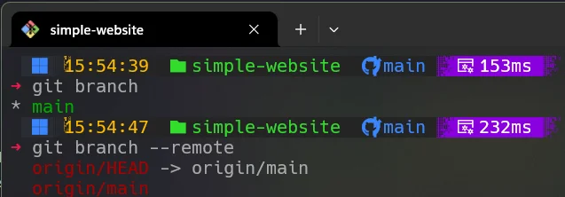
Nosso repositório possui apenas um ramo chamado main. Ele é criado automaticamente ao iniciar um novo repositório e representa o tronco principal do projeto.
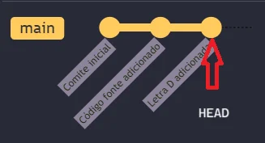
A linha representa o ramo principal, com cada commit mostrado como um círculo. A seta indica o HEAD, apontando para o commit mais recente.

Trabalhando com ramos (branches)
Uma ramificação no Git é uma linha de desenvolvimento independente, com um histórico de commits separado. Em grandes projetos, cada novo recurso ou correção de bug geralmente é desenvolvido em uma ramificação própria.
Movendo, apagando e renomeando arquivos
As ramificações são úteis quando você deseja experimentar alterações sem afetar o código principal.
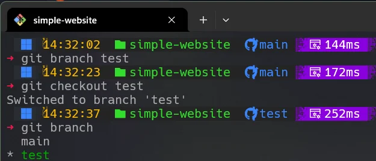
O comando git branch test cria o novo ramo, e git checkout test alterna para ele.
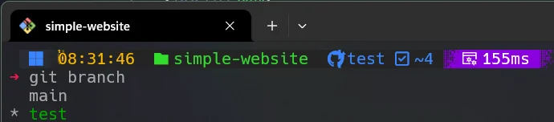
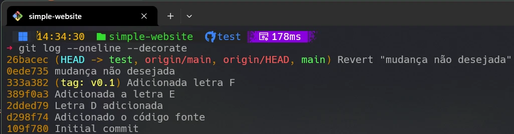
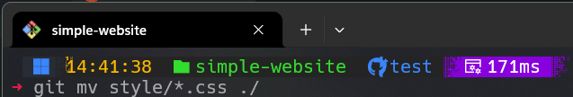
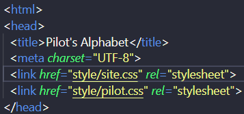
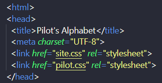
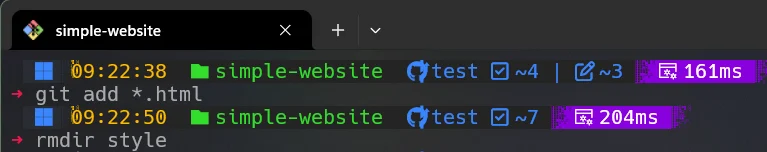
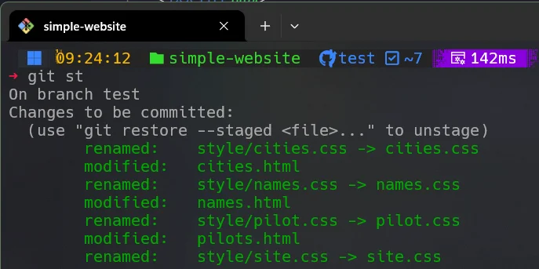
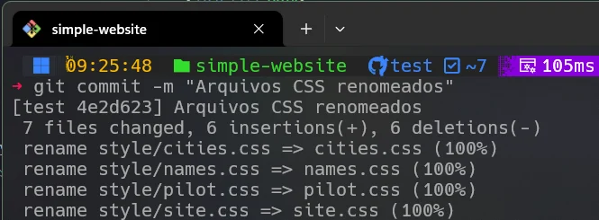
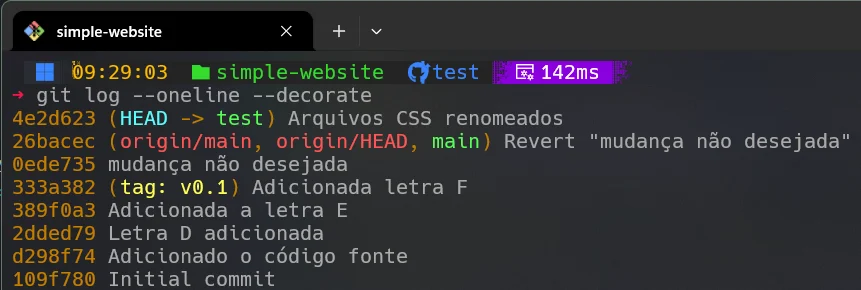
Git Graph
Abaixo temos o diagrama Mermaid representando a evolução dos commits no projeto.
Mermaid Code
gitGraph
commit id: "0-109f780"
commit id: "1-d298f74"
commit id: "2-2dded79"
commit id: "3-389f0a3"
commit id: "4-333a382"
commit id: "5-0ede735"
commit id: "6-26bacec"
branch teste
checkout teste
commit id: "7-4e2d623"